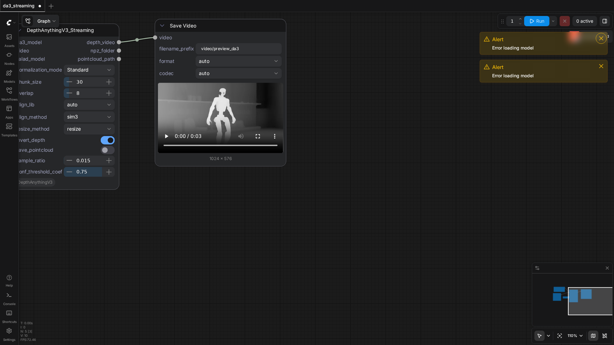

100.0%
7 passed
7/7 tests
Workflows

advanced
pass

advanced_3d
pass

advanced_3d_multiview
pass

bas_relief
pass

da3_streaming
pass

simple
pass

video_multiview_depth
pass
Downloaded Models
9 files · 2.4 GBmodels/depthanything3/
da3_large.safetensors1.5 GB
da3_base.safetensors516.4 MB
.cache/huggingface/CACHEDIR.TAG191.0 B
.cache/huggingface/download/model.safetensors.metadata124.0 B
.cache/huggingface/.gitignore1.0 B
models/salad/
dino_salad.safetensors335.7 MB
.cache/huggingface/CACHEDIR.TAG191.0 B
.cache/huggingface/download/dino_salad.safetensors.metadata125.0 B
.cache/huggingface/.gitignore1.0 B